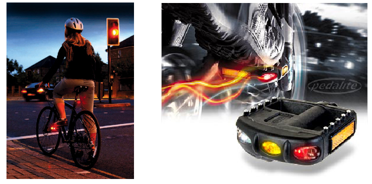

La pédale lumineuse KPL200

PEDALITE est une société anglaise qui a conçu et fabrique un produit original : Une pédale lumineuse. Le principe est simple, performant et très innovant : lors du pédalage, un petite génératrice intégrée dans chaque pédale produit du courant et alimente les éclairages à LED clignotants. le surplus d'énergie produit est stocké et sera restitué lorsque le cycliste ne pédale pas (en descente, à l’arrêt, etc). L’autonomie est de l’ordre de 5 minutes. Les pédales KPL200 permettent donc d’accentuer la visibilité des cyclistes et sont sans entretien : pas de pile, pas de fils, pas d’éléments mobiles, pas de risque de panne ! Elles sont donc particulièrement rassurantes pour les parents qui savent que leurs enfants restent visibles, même si l’éclairage de leur dynamo tombe en panne.
Pour l'usager de la route - qu'il soit piéton , cycliste ou automobiliste - ces pédales indiquent plus facilement à quelle distance se trouve le cycliste (visible à 1000 mètres de distance en terrain dégagé). Les 3 éclairages sont de couleurs différentes (blanc, orange et rouge) et clignotent alternativement pour augmenter la visibilité. Ainsi, l’éclairage, avec deux pédales, se fait sur 360°. Le cycliste est donc particulièrement visible. Le risque de collision et donc d’accident est, de ce fait, considérablement réduit. Ce produit est destiné au grand public pour améliorer la sécurité routière.
Caractéristiques :
Created with the Personal Edition of HelpNDoc: Write eBooks for the Kindle